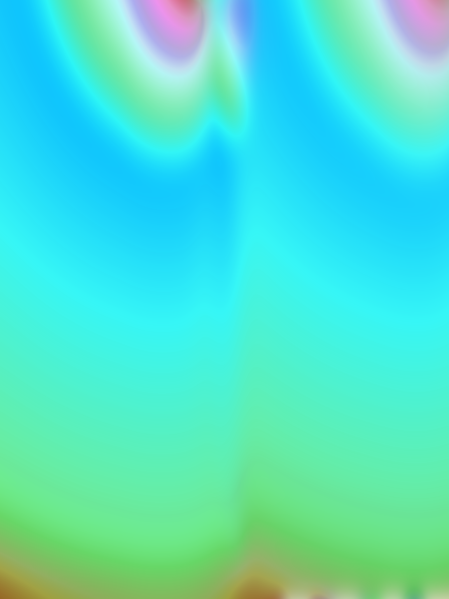

Paola Silva Lizárraga is a Rhizome Microgrant recipient, an artist-in-residence at the SVA RisoLAB (upcoming), a Tufts Summer Scholar, and
alum from the School of the Museum of Fine Arts at Tufts University
My work reflects my interaction with American culture through shopping malls and virtual worlds, while living in Tijuana, Mexico. I make interactive sculptures, browser-based video games, and animated videos, depicting the digital and physical advertisements I saw as a border-dweller, promising me the chance to de-Mexicanize. When I lived in Tijuana, I believed that if I could consume like an American, I would become one. I was used to seeing the “knockoff” on my side of the border, and the “real thing” on the other. I grew up around advertisement banners blown-up cheaply, so blown-up you could count the pixels. When my family and I would cross to America on weekend trips to the mall, pixels were imperceptible. To go to America was to go to the mall. The internet, and the shopping mall were a promise. That we could become American, that we could become full resolution. We could exit knockoff status, and become “the real thing.”
It is important to emphasize that, for myself, the shopping mall and the online world were essentially the same. They both acted as aspirational advertisements for American exceptionalism and globalism. I am interested in the strategic location of shopping malls directly on the US-Mexico border. Therefore, I use pixels and resolution to represent power, and I interpret the shopping mall as an American fortress, a soft power border.
My work usually begins as a pencil drawing, which I use as a base for digital paintings. Depending on the project, I use outside manufacturers to produce advertisement banners, or acrylic prints, of my drawn work. Sometimes my drawings reference children’s merchandise and plastic toys. Appropriating designs from American toy companies is thematic: my goal is to make excellent knockoffs. Other times my imagery was taken from open access stock photos, as I was playing with artifice, advertisement, and American imagery.
My work is about making the uncanny duplicate. A duplication of a toy, or a movie, or a virtual world, so faithful that it reveals the inherent artifice of the original.
I view shopping malls as shorthand for surveillance, class discrimination, and gentrification. The shopping mall is attractive to me as it is alienating. My Mexican-ness is understood as a default knockoff. I understand my artwork the same way. By making a knock-off web game, or a knock-off toy, or a knock-off children's book, I highlight the inherent artifice of the original: the full render, Mexicanized.
Awards
2026 YoungArts Microgrant
2026 SVA RisoLAB Artist-in-Residence, Upcoming
2025 Rhizome Microgrant
2025 Tufts University Summer Scholars Research Grant
2025 YoungArts Microgrant
2024 "Best Animation" School of the Museum of Fine Arts Media Arts Annual
2023 School of the Museum of Fine Arts Dean's Research Award
Group shows & publications
2026 kuš! comics Anthology GEN-Z, issue #60
2026 Facebook Marketplace GalleryBrooklyn, NY
2026 Sleeper in Metropolis Gallery 198, Brooklyn, NY
2026 Artifact Not That Deep Gallery, Brooklyn, NY
2026 Benefit film screening for Illinois Coalition for Immigrant and Refugee Rights, No Nation Art Lab, Chicago, IL
2026 Recession Indicators Medford, MA
2026 never seen before Allston, MA, Co-curator
2025 Everything looks good on paper Mission Hill Gallery, Boston, MA
2025 Wear and Tear Bowery Art Collective, Metuchen, NJ
2025 UNFIXED the Well Gallery, Boston, MA
2025 CyberFrames Boston CyberArts Museum, Boston, MA
2025 The Self Imagined Carol Schlosberg Alumni Gallery, Beverly, MA
2025 RE:boot Boston CyberArts Museum, Boston, MA
2024 FAVES Mission Hill Gallery, Boston, MA
Other Experience
2026 Starface World Campaign
2026 Multiple Formats Book Fair
2025 Printed Matter New York Art Book Fair
2024 Animation Freelance Work, Reggie Pearl album MEGAPEARL
